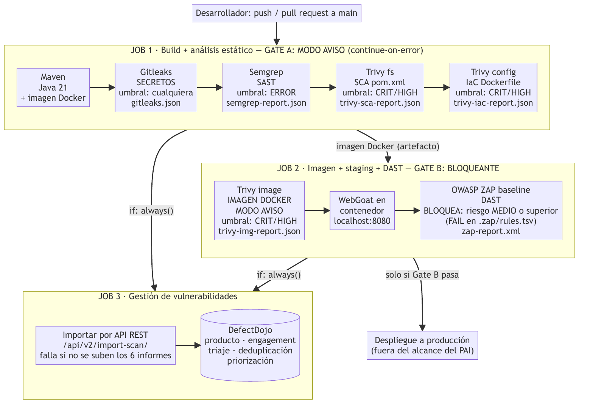
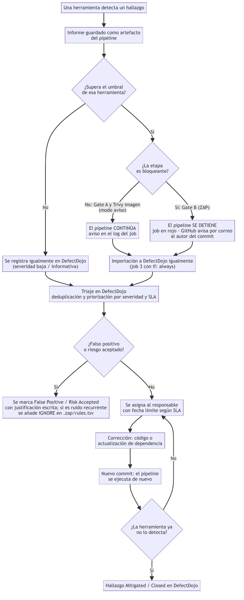
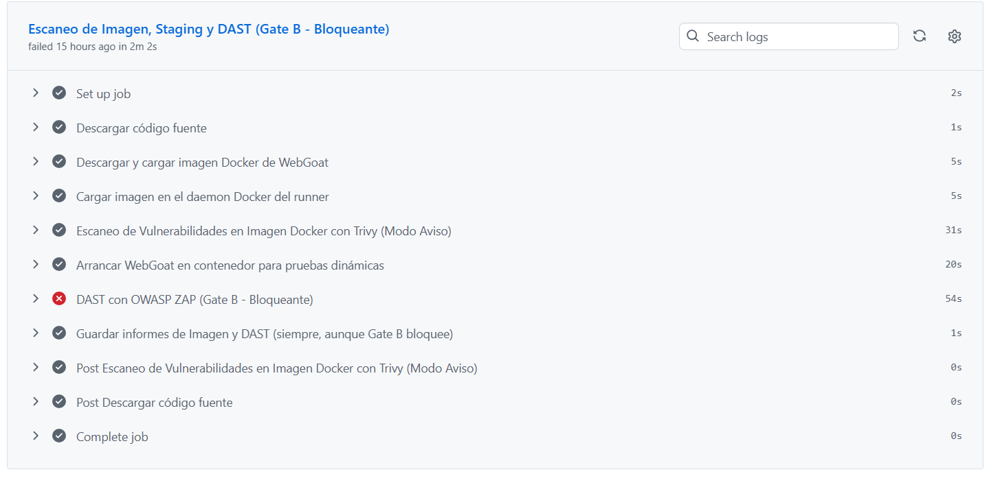
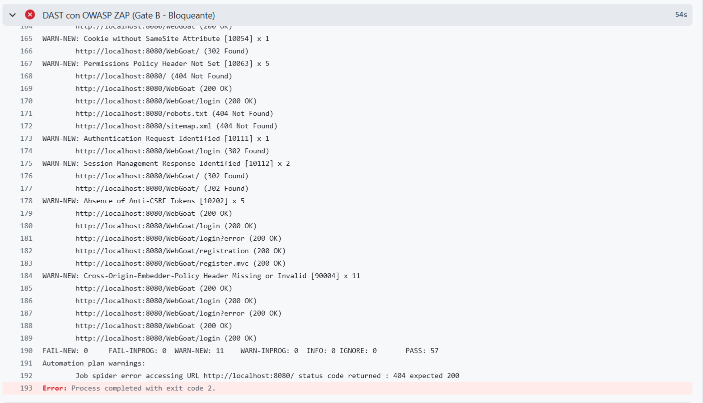
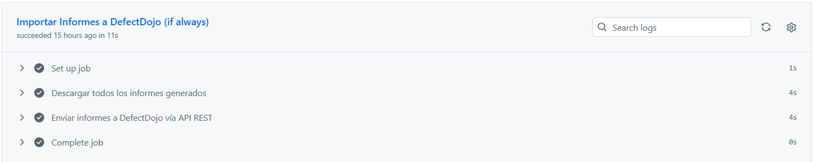
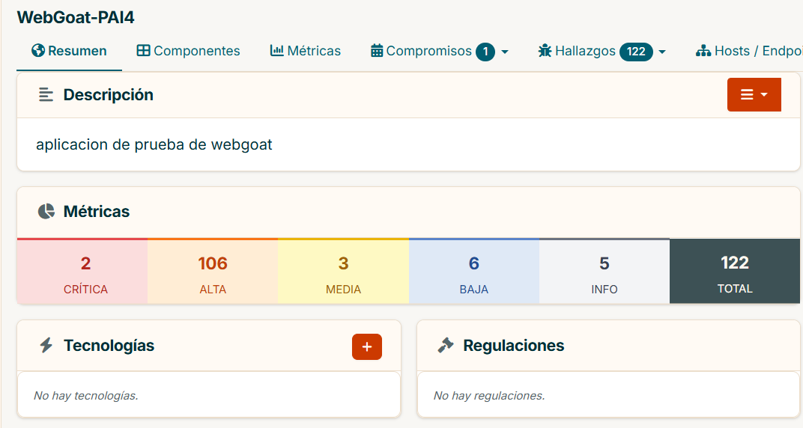
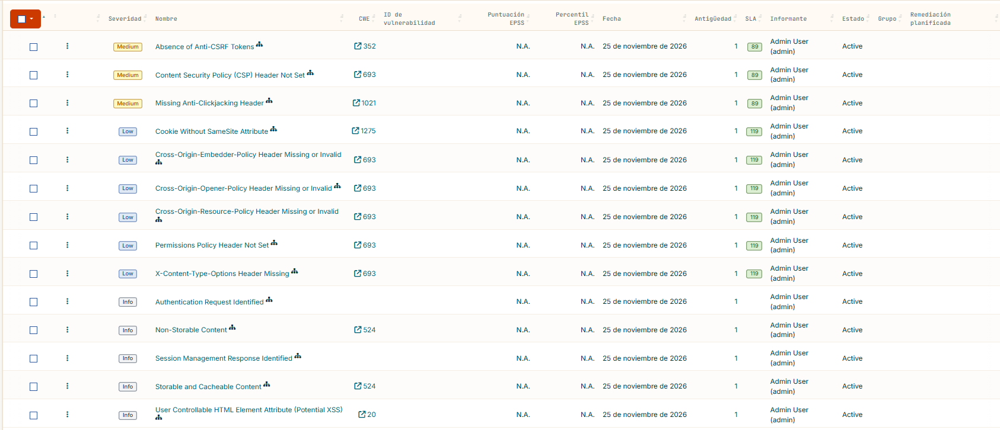
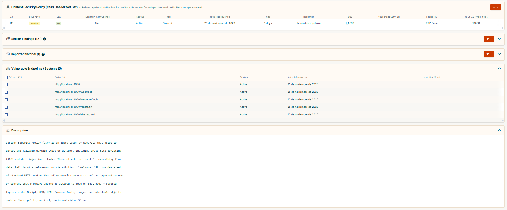
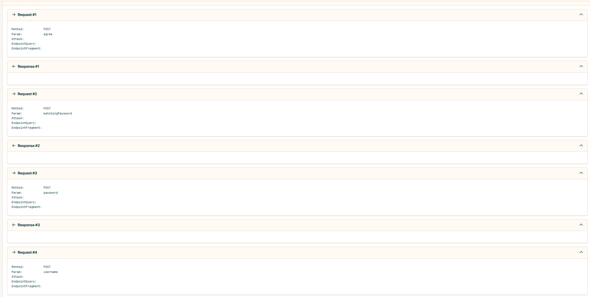

| Security Team | Security Team 2 — Raymundo García Pérez · Konstantinos Peridis · Luis Alarcón Conradi |
| Aplicación de prueba | OWASP WebGoat (Java · Spring Boot · Maven · Docker) |
| CI/CD | GitHub Actions |
| Herramientas | Gitleaks · Semgrep · Trivy (SCA, IaC, imagen) · OWASP ZAP · DefectDojo |
| Repositorio | https://github.com/luialacon/webgoat_PAI-4 (público) |
| Fecha | 26 de noviembre de 2026 |
El cliente de INSEGUS había sufrido incidentes por vulnerabilidades que llegaron a producción porque su pipeline CI/CD no comprobaba la seguridad del código, de las dependencias ni de la configuración. La respuesta del equipo ha sido construir, sobre OWASP WebGoat (una aplicación vulnerable a propósito), un pipeline DevSecOps en GitHub Actions que se ejecuta solo con cada push o pull request y que incorpora seguridad en tres momentos: al compilar (secretos, SAST, SCA e IaC), sobre la imagen ya construida y sobre la aplicación en ejecución (DAST), enviando todos los resultados a DefectDojo.
| Objetivo | Estado | Evidencia principal |
|---|---|---|
| 1. Diseño y montaje del pipeline, con dos diagramas coherentes con la implementación | Cumplido | §3, docs/diagramas/, .github/workflows/devsecops-webgoat-improved.yml |
| 2. Al menos 3 herramientas de tipos distintos | 5 tipos: secretos, SAST, SCA, IaC/imagen y DAST | §4 |
| 3. Ejecución automática en cada cambio | Cumplido | Disparador push y pull_request; ejecuciones 45681585355 y 45848736228 |
| 4. Quality gates, uno bloqueante y otros en modo aviso, con ejecución detenida | Cumplido | §6; Gate B detiene el pipeline (ZAP, código de salida 1) |
| 5. Gestión centralizada y automática en DefectDojo | Cumplido | Importación automática por API REST: 6 de 6 informes en la ejecución final 45848736228; triaje documentado |
Resultado clave. En la ejecución final, las cinco herramientas detectan al menos una vulnerabilidad de la aplicación: Gitleaks 24 posibles secretos, Semgrep 31 hallazgos de código, Trivy SCA 23 vulnerabilidades en dependencias (1 crítica y 22 altas), Trivy IaC 1 configuración insegura (contenedor como root) y ZAP 14 alertas dinámicas, 3 de ellas de riesgo medio que bloquean el pipeline. El análisis crítico (§8) separa lo que es ruido o vulnerabilidad didáctica deliberada de lo que es un defecto real a corregir.
Honestidad sobre el estado. El proceso reveló fallos en nuestra primera versión del pipeline (herramientas que ejecutaban sin producir informe) que se detectaron, se corrigieron y se documentan en §5.2. La limitación que queda es de infraestructura: DefectDojo corre en un equipo local y se alcanza mediante un túnel temporal, por lo que su dirección cambia al reiniciarlo y hay que actualizar un secreto (§9).
Aplicación: OWASP WebGoat, aplicación Java con Spring Boot que contiene lecciones intencionadamente vulnerables (inyección SQL, XXE, SSRF, JWT, componentes vulnerables...). Se eligió porque su tecnología (Java/Maven/Docker) está bien soportada por las herramientas libres y porque, al ser vulnerable a propósito, garantiza que cada herramienta tiene algo que detectar. Se analiza únicamente la instancia desplegada por el propio equipo (contenedor efímero en el runner, localhost:8080), conforme al uso responsable exigido.
Repositorio: https://github.com/luialacon/webgoat_PAI-4 (público, no requiere dar acceso al profesorado). Rama main. El pipeline está en .github/workflows/devsecops-webgoat-improved.yml; la configuración de herramientas en .gitleaks/config.toml y .zap/rules.tsv; diagramas, evidencias y triaje en docs/. Las credenciales (URL y clave de DefectDojo, ID del engagement) se guardan como secretos del repositorio y nunca aparecen en el código ni en los logs entregados.
Restricción de diseño: WebGoat es software de formación, por lo que no se corrigen las vulnerabilidades de las lecciones (lo prohíbe su propia guía del proyecto). Esto condiciona el triaje (§7) y explica por qué el pipeline nunca terminará en verde mientras las cabeceras de seguridad de la aplicación no se endurezcan.
La Figura 1 muestra las etapas en orden, la herramienta de cada etapa, el informe que genera, cómo llega a DefectDojo y la posición, modo y umbral de cada quality gate. Corresponde línea a línea con el fichero del pipeline.

| Etapa (job) | Herramienta · tipo | Informe | Gate · modo | Umbral |
|---|---|---|---|---|
| 1 Build + estático | Gitleaks · secretos | gitleaks.json | A · aviso | Cualquier secreto en todo el historial |
| 1 | Semgrep · SAST | semgrep-report.json | A · aviso | Severidad ERROR |
| 1 | Trivy fs · SCA (pom.xml) | trivy-sca-report.json | A · aviso | CRITICAL o HIGH |
| 1 | Trivy config · IaC (Dockerfiles) | trivy-iac-report.json | A · aviso | CRITICAL o HIGH |
| 2 Imagen + DAST | Trivy image · contenedor | trivy-img-report.json | Aviso | CRITICAL o HIGH |
| 2 | OWASP ZAP baseline · DAST | zap-report.xml | B · bloqueante | Riesgo medio o superior (reglas FAIL) |
| 3 Gestión | DefectDojo (API REST) | — | Falla si no se suben los 6 informes | 6 de 6 informes |
La Figura 2 recoge qué ocurre desde que una herramienta detecta algo hasta que se resuelve: decisiones (¿supera el umbral?, ¿la etapa es bloqueante?, ¿es falso positivo?), acción del pipeline (continúa o se detiene), a quién se avisa (GitHub notifica por correo al autor del commit cuando un job falla) y cómo se registra y trata el hallazgo en DefectDojo.

if: always()), de modo que un bloqueo no impida registrar los hallazgos.if: always()), incluso si un gate falla.Se han integrado herramientas libres de cinco tipos (el enunciado exige tres). La elección responde a la tecnología de la aplicación (Java/Maven/Docker), a que funcionen sin licencia ni servidor propio dentro de un runner efímero y a que DefectDojo pueda importar sus informes.
| Tipo · herramienta | Qué analiza y por qué encaja con WebGoat | Limitaciones | Alternativas valoradas |
|---|---|---|---|
| Secretos · Gitleaks | Busca claves, tokens y claves privadas en todo el historial de Git. Un secreto filtrado sigue siendo explotable aunque se borre del último commit. | Muchos falsos positivos en un proyecto didáctico (claves de ejemplo en lecciones y tests). | TruffleHog, detect-secrets |
| SAST · Semgrep | Analiza el código fuente Java sin ejecutarlo (inyección SQL, XXE, ejecución de comandos, path traversal, SSRF) y también los YAML de GitHub Actions. Es rápido y no necesita compilar. | Análisis por patrones: no sigue todos los flujos de datos; genera falsos positivos y no ve lo que solo ocurre en ejecución. | SonarQube (requiere servidor), CodeQL (más lento y profundo) |
| SCA · Trivy fs | Compara las dependencias declaradas en pom.xml con su base de CVE. Cubre el riesgo de cadena de suministro (caso Log4Shell). | Solo ve versiones declaradas/resueltas; no sabe si el código vulnerable se invoca realmente (alcanzabilidad). | OWASP Dependency-Check (descartado, ver §5.2), Dependabot, Snyk |
| IaC · Trivy config | Revisa Dockerfile y Dockerfile_desktop en busca de malas prácticas (usuario root, falta de healthcheck...). | Solo ficheros de infraestructura; el Dockerfile principal de WebGoat está endurecido, por lo que se amplió a Dockerfile_desktop. | KICS, Checkov |
| Imagen · Trivy image | Analiza las librerías empaquetadas dentro de la imagen final (el .jar y la imagen base), incluyendo lo que no se ve en el pom.xml. | Duplica parte del SCA; la imagen base puede traer CVE que el equipo no controla. | Grype, Clair |
| DAST · OWASP ZAP baseline | Ataca la aplicación en ejecución como lo haría un atacante externo: cabeceras de seguridad, cookies, protección CSRF. Detecta fallos de configuración que ningún análisis estático ve. | El modo baseline es pasivo y no autentica: solo explora la página de acceso y de registro, no las lecciones. Un análisis activo y autenticado tardaría mucho más. | Wapiti, Burp Community (sin automatización) |
| Gestión · DefectDojo | Importa los informes de todas las herramientas, deduplica, clasifica y prioriza por SLA, y permite marcar falsos positivos con justificación. | Requiere una instancia accesible desde el pipeline. | Otros gestores de vulnerabilidades |
IAST no se ha incorporado: las soluciones disponibles son comerciales y no se dispuso de licencia; los otros cinco tipos ya cubren desde el código hasta la aplicación en ejecución.
El workflow PAI-4 DevSecOps WebGoat (Mejorado) se dispara con push y pull_request sobre main. Tiene tres jobs:
continue-on-error: true (modo aviso) y los informes se suben como artefacto build-static-reports..zap/rules.tsv. Este paso no tiene continue-on-error, por lo que su fallo detiene el pipeline. Los informes se guardan siempre (if: always()).if: always(), descarga los artefactos y llama a /api/v2/import-scan/ con la clave guardada como secreto. Comprueba antes la conexión, envía commit, rama y número de ejecución, y falla si no se suben los 6 informes.Todas las herramientas están fijadas a una versión concreta para que el pipeline sea reproducible (Trivy v0.76.2, Gitleaks v8.24.3, acción de Trivy v0.36.0).
La primera versión del pipeline (25 de noviembre) parecía correcta —los jobs salían en verde—, pero el análisis de sus logs reveló defectos que se corrigieron al día siguiente. Los diagramas de la sección 3 reflejan el diseño ya corregido.
| Problema detectado | Causa (comprobada en el log) | Corrección |
|---|---|---|
| Gitleaks no generaba informe y solo miraba el último commit | La acción gitleaks-action@v2 ignora el parámetro args (aviso Unexpected input(s) 'args') | Se ejecuta el binario oficial con informe JSON sobre todo el historial. Resultado: 14 commits analizados, 24 detecciones |
| Dependency-Check nunca llegó a DefectDojo | Escribía el informe fuera de la ruta recogida y su contenedor se rompía con el JAVA_HOME del runner; además exige descargar la base NVD, muy lenta sin clave | Cambio de herramienta SCA: Trivy fs sobre pom.xml, rápido y sin servidor. Detecta 23 vulnerabilidades |
| El gate de ZAP bloqueaba "por casualidad" (código 2 por avisos) | .zap/rules.tsv solo definía 2 reglas en modo aviso | Umbral explícito: reglas de riesgo medio en FAIL, resto WARN, ruido informativo IGNORE |
| La importación "pasaba" aunque faltaran informes | El script omitía en silencio los ficheros inexistentes | Cuenta los informes enviados y falla si no son 6; comprobación previa de conexión sin imprimir la URL |
| Trivy dejó de instalarse tras fijar su versión | La versión v0.65.0 fijada por la acción ya no existe en GitHub | Acción v0.36.0 con Trivy v0.76.2, verificadas |
| Trivy IaC no encontraba nada | El Dockerfile principal está endurecido y Dockerfile_desktop no se reconocía por su nombre | Se copia como Dockerfile.desktop en el runner para analizarlo (hallazgo: ejecuta como root) |
| Gate | Etapa / herramienta | Modo | Umbral y cómo se configura |
|---|---|---|---|
| A | Gitleaks | Aviso | Cualquier secreto → --exit-code 1 + continue-on-error |
| Semgrep | Aviso | Severidad ERROR → --severity ERROR --error + continue-on-error | |
| Trivy SCA | Aviso | CRITICAL o HIGH → exit-code: 1 + continue-on-error | |
| Trivy IaC | Aviso | CRITICAL o HIGH → exit-code: 1 + continue-on-error | |
| — | Trivy imagen | Aviso | CRITICAL o HIGH |
| B | OWASP ZAP baseline | Bloqueante | Reglas 10038 (CSP), 10020 (anti-clickjacking), 10202 (anti-CSRF) en FAIL → código de salida 1 y job en rojo |
Justificación de los umbrales. En el análisis estático se usa el umbral "crítica o alta", habitual y alineado con el enunciado, pero en modo aviso porque la aplicación es vulnerable a propósito y bloquear aquí impediría llegar al DAST. En ZAP se bloquea a partir de riesgo medio: las reglas de riesgo bajo (cookie SameSite, Permissions-Policy, etc.) son endurecimientos deseables pero no justifican parar una entrega, mientras que la ausencia de CSP, de protección anti-clickjacking y de tokens CSRF afecta directamente a ataques web habituales. Las reglas 10031, 10111 y 10112 son informativas y se ignoran.
FAIL-NEW: 3 … PASS: 57 y exit code 1; el job 2 queda en rojo y el despliegue no se produce. En la ejecución del 25-11 ZAP bloqueó con código 2 (WARN-NEW: 11), lo que justificó definir el umbral de forma explícita.if: always()).DefectDojo se ejecuta en un equipo local del equipo, organizado como producto WebGoat-PAI4 con un engagement de CI/CD. Como los runners de GitHub no alcanzan localhost, se expone mediante un túnel de Cloudflare (conexión saliente cifrada, sin abrir puertos). El pipeline envía cada informe con la API REST (/api/v2/import-scan/) usando los tipos de escáner de DefectDojo (Gitleaks Scan, Semgrep JSON Report, Trivy Scan, ZAP Scan) y un título de test distinto por herramienta. La subida es automática; no hay pasos manuales.
Evidencia. En la ejecución final (45848736228) el job de importación terminó en verde con «Informes enviados a DefectDojo: 6 de 6 esperados» (Anexo B). En la ejecución del 25-11 se importaron 7 tests con 122 hallazgos activos (2 críticos, 106 altos, 3 medios, 6 bajos y 5 informativos; Anexo A, Figuras A4 y A5). Esa cifra incluye duplicados: Semgrep y Trivy imagen se importaron dos veces (dos ejecuciones consecutivas sin reimport), de modo que los hallazgos únicos son 68. Las 14 alertas de ZAP aparecen con su CWE y su SLA (89 días las medias y 119 las bajas).
Criterio: las vulnerabilidades de las lecciones de WebGoat son el material didáctico y no se corrigen; se registran en DefectDojo como False Positive (no es un defecto no intencionado) o Risk Accepted, siempre con justificación escrita. Lo que queda fuera de las lecciones es real y se prioriza por severidad y SLA (crítica 7 días, alta 30, media 90, baja 120).
| Hallazgo | Nº | Decisión | Justificación |
|---|---|---|---|
| Gitleaks: generic-api-key, jwt, private-key en lecciones, documentación y tests | 24 | False Positive | Claves y tokens de ejemplo de las lecciones JWT y criptografía; ninguna credencial real |
| Semgrep: detected-jwt-token | 13 | False Positive | JWT de ejemplo en documentación y tests |
Semgrep: SQL formateado/tainted, XXE, ProcessBuilder, path traversal, SSRF en lessons/ | 17 | Risk Accepted | Vulnerabilidades deliberadas de las lecciones |
| Trivy SCA e imagen: xstream 1.4.5 (CVE-2013-7285 crítica y 22 altas) | 23 + 23 | Risk Accepted | Componente vulnerable deliberado: lo usa VulnerableComponentsLesson para enseñar CVE-2013-7285; actualizarlo rompería la lección. Se vigila que no aparezcan otras dependencias vulnerables |
| ZAP 10031, 10111, 10112 (reglas pasivas) | 3 | False Positive / IGNORE | Sin evidencia de ataque: el campo Attack está vacío en las 4 peticiones (Anexo A, Fig. A7) |
Semgrep run-shell-injection en release.yml:24 | 1 | Real · P3 | Interpolación directa de ${{ }} en un run:; corregir pasando el valor por env: |
Trivy IaC DS-0002: Dockerfile_desktop sin USER | 1 | Real · P2 | El contenedor de escritorio se ejecuta como root; añadir un usuario sin privilegios |
| ZAP: CSP, anti-clickjacking, anti-CSRF | 3 | Real · P2 (bloquea Gate B) | Cabeceras y protecciones ausentes en la aplicación; configurar Spring Security |
| ZAP: cookie SameSite, Permissions-Policy, X-Content-Type-Options, COEP/COOP/CORP | 6 | Real · P4 (aviso) | Endurecimiento de cabeceras |
Ejemplo de falso positivo documentado: la regla pasiva 10031 de ZAP (User Controllable HTML Element Attribute) señaló los campos del formulario de registro; el detalle de las peticiones muestra el campo Attack vacío, es decir, ZAP no inyectó ninguna carga ni demostró XSS. Se marcó como False Positive con esa justificación (Anexo A, Fig. A7). El documento docs/triaje-vulnerabilidades.md recoge la tabla completa.
La deduplicación es necesaria porque el mismo componente aparece en dos herramientas (Trivy SCA e imagen) y porque cada ejecución vuelve a importar los mismos hallazgos; la mejora propuesta es usar reimport-scan, que además cierra automáticamente los hallazgos que dejan de detectarse.
| Herramienta | Resultado | Qué significa |
|---|---|---|
| Gitleaks | 24 detecciones (8 generic-api-key, 14 jwt, 2 private-key) | Todas en lecciones, documentación o tests: claves de ejemplo. Ningún secreto real |
| Semgrep | 31 hallazgos ERROR: 13 JWT, 17 de lecciones, 1 de CI/CD | La mayoría son las vulnerabilidades didácticas; el hallazgo de release.yml es un defecto real del pipeline |
| Trivy SCA | 23 (1 crítica, 22 altas), todas en xstream 1.4.5; todas con versión corregida disponible | Es la vulnerabilidad que enseña la lección de componentes vulnerables (RCE por deserialización, CVE-2013-7285) |
| Trivy imagen | 23 (1 crítica, 22 altas) | Mismo conjunto que el SCA: confirma que la dependencia llega a la imagen final |
| Trivy IaC | 1 alta (DS-0002) en Dockerfile_desktop; 0 fallos en Dockerfile | El Dockerfile de producción es correcto (usuario no privilegiado, healthcheck); el de escritorio ejecuta como root |
| OWASP ZAP | 14 alertas: 3 medias, 6 bajas, 5 informativas; PASS: 57 | Faltan CSP, protección anti-clickjacking y tokens CSRF; el resto es endurecimiento |
| Ejecución 25-11 (45681585355) | Ejecución 26-11 (45848736228) | |
|---|---|---|
| Job 1 (Gate A, aviso) | Verde | Verde |
| Job 2 (Gate B, ZAP) | Rojo: exit 2 · WARN-NEW: 11 | Rojo: exit 1 · FAIL-NEW: 3 |
| Informes generados | 4 de 6 útiles (Gitleaks y Dependency-Check sin informe válido) | 6 de 6 |
| Importación a DefectDojo | Verde pero parcial: omitió 2 informes sin avisar | Verde: 6 de 6 informes importados |
release.yml, el contenedor de escritorio como root y las cabeceras de seguridad. Priorizar por severidad bruta habría llevado a "arreglar" lo que no debe arreglarse.El pipeline cumple los cinco objetivos del PAI: se ejecuta automáticamente, integra cinco tipos de análisis, distingue gates de aviso y bloqueantes con ejecución detenida demostrada, y envía los resultados a DefectDojo por API. Respondiendo a la pregunta del cliente, los incidentes tenían causa en que ninguna etapa comprobaba la seguridad; integrar estas comprobaciones en el pipeline hace que cada cambio se revise automáticamente, desplazando la detección a etapas tempranas.
Lecciones aprendidas: (1) verificar cada herramienta con un resultado esperado, no confiar en el color del job; (2) fijar versiones, porque una versión retirada rompió el pipeline; (3) triar con el contexto del proyecto, porque en software de formación la vulnerabilidad es intencionada.
DEFECTDOJO_URL antes de ejecutar. Con el túnel caído el job de importación falla de forma explícita y con la causa (durante las pruebas ocurrió varias veces: dirección inexistente y túnel desconectado), sin perder los informes, que quedan como artefactos. Las capturas de DefectDojo de este informe proceden de la ejecución del 25-11; la importación de la ejecución final se evidencia en el log. En un entorno real se usaría un túnel nombrado o una instancia con dirección fija.Mejoras futuras: túnel nombrado de Cloudflare; reimport-scan para deduplicar y cerrar hallazgos; ZAP autenticado y análisis activo; corrección de release.yml y de Dockerfile_desktop; cabeceras de seguridad en la aplicación para que Gate B pueda pasar.
Uso de IA. Se usó un asistente de IA (Claude Code) como apoyo en la revisión y la redacción; cada cambio se verificó ejecutando el pipeline real y las cifras proceden de los informes y logs entregados.
/api/v2/import-scan/

WARN-NEW: 11 … PASS: 57 y «Process completed with exit code 2».
if: always().



.zap/rules.tsv (umbral del Gate B):
10038 FAIL Content Security Policy (CSP) Header Not Set 10020 FAIL Missing Anti-clickjacking Header 10202 FAIL Absence of Anti-CSRF Tokens 10021 WARN X-Content-Type-Options Header Missing 10054 WARN Cookie without SameSite Attribute 10063 WARN Permissions Policy Header Not Set 10031 IGNORE User Controllable HTML Element Attribute (Potential XSS) 10111 IGNORE Authentication Request Identified 10112 IGNORE Session Management Response Identified
Log de la ejecución 45848736228 (Gate B detenido por ZAP):
FAIL-NEW: Missing Anti-clickjacking Header [10020] x 5 FAIL-NEW: Content Security Policy (CSP) Header Not Set [10038] x 5 FAIL-NEW: Absence of Anti-CSRF Tokens [10202] x 5 FAIL-NEW: 3 FAIL-INPROG: 0 WARN-NEW: 5 WARN-INPROG: 0 INFO: 0 IGNORE: 3 PASS: 57 ##[error]Process completed with exit code 1.
Gitleaks corregido (extracto del paso del workflow):
./gitleaks detect --source . --config .gitleaks/config.toml \ --redact --report-format json --report-path gitleaks.json --exit-code 1 INF 14 commits scanned. WRN leaks found: 24
Trivy IaC (informe trivy-iac-report.json): Dockerfile → 20 comprobaciones superadas, 0 fallos; Dockerfile.desktop → 1 fallo: DS-0002 HIGH Image user should not be 'root'.
Importación a DefectDojo (log de la ejecución 45848736228):
Subiendo build-static-reports/gitleaks.json (Gitleaks Scan) a DefectDojo... OK Subiendo build-static-reports/semgrep-report.json (Semgrep JSON Report)... OK Subiendo build-static-reports/trivy-sca-report.json (Trivy Scan)... OK Subiendo build-static-reports/trivy-iac-report.json (Trivy Scan)... OK Subiendo staging-dast-reports/trivy-img-report.json (Trivy Scan)... OK Subiendo staging-dast-reports/zap-out/zap-report.xml (ZAP Scan)... OK Informes enviados a DefectDojo: 6 de 6 esperados
| Elemento | Ruta |
|---|---|
| Informe técnico (PDF) | Informe_Tecnico_PAI-4_DevSecOps_WebGoat.pdf |
| Definición del pipeline | .github/workflows/devsecops-webgoat-improved.yml |
| Configuración de herramientas | .zap/rules.tsv, .gitleaks/config.toml |
| Diagramas | docs/diagramas/ (pipeline.png, flujo.png y fuentes .mmd) |
| Informes de todas las herramientas y log de la ejecución final | docs/evidencias/ejecucion-2026-11-26-final/ |
| Evidencias de la primera ejecución y capturas de DefectDojo | docs/evidencias/capturas/ |
| Triaje | docs/triaje-vulnerabilidades.md |
Los ficheros entregados no contienen credenciales: se comprobó que los logs e informes no incluyen claves, tokens ni la dirección del túnel; las credenciales de DefectDojo son secretos del repositorio.